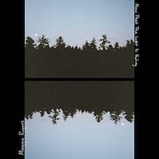

Maggie Rogers performing her music at the Grammy Museum in 2019. Photo by Justin Higuchi. License: Attribution 2.0 Generic. Source: Flickr.
Margaret Debay Rogers, Maggie Rogers, is an American singer-songwriter. She caught public attention when Pharrell Williams heard one of her songs called "Alaska" during class at New York University. She is 27 years old and from Easton, Maryland. Her music is beloved by the queer community for its whimsical and ethereal sounds. Whether you're listening to her music during a late night drive or while relaxing at home, it'll be sure to make you feel something.

"Dog Years" by Maggie Rogers
"Fallingwater" by Maggie Rogers
"New Song" by Maggie Rogers
"Resonant Body" by Maggie Rogers